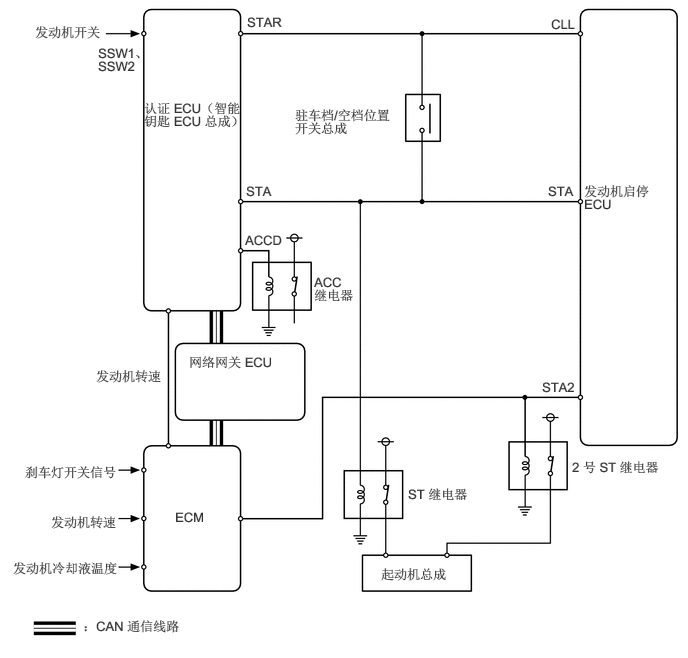

功能
包括起动保持功能。踩下制动踏板且换档杆置于 P 或 N 的情况下，按下发动机开关时，此功能运行起动机直至发动机起动。这样防止起动机总成运行时间不充分。也防止发动机在起动后不脱离起动状态。
该系统具有以下安全特性：
发动机运行时，起动机总成不工作。
发动机起动后，即使按住发动机开关，起动机总成也将停止工作。
起动机最长运行约达 25 秒以保护起动机电动机。
首次起动发动机时，如果认证 ECU（智能钥匙 ECU 总成）接收到来自发动机开关的起动信号，则换档杆置于 P 或 N 时，认证 ECU（智能钥匙 ECU 总成）通过驻车档/空档位置开关总成将工作信号发送至 ST 继电器，并且发动机启停 ECU 将工作信号发送至 2 号 ST 继电器以运行起动机总成。此时，认证 ECU（智能钥匙 ECU 总成）切断 ACC 继电器工作信号 (ACCD)，以防止仪表、时钟和音响系统闪烁。
在怠速停止控制期间起动发动机时，发动机启停 ECU 根据车辆状况将工作信号发送至 ST 继电器和 2 号 ST 继电器，以运行起动机总成。
发动机起动期间，认证 ECU（智能钥匙 ECU 总成）和/或发动机启停 ECU 持续向 ST 继电器和 2 号 ST 继电器发送工作信号，直至检测到发动机成功起动。由认证 ECU（智能钥匙 ECU 总成）和 ECM 判定发动机是否成功起动，一旦判定发动机成功起动，则停止认证 ECU（智能钥匙 ECU 总成）和/或发动机启停 ECU 至 ST 继电器和 2 号 ST 继电器的信号输出。
判定发动机成功起动的发动机转速取决于发动机冷却液温度。
